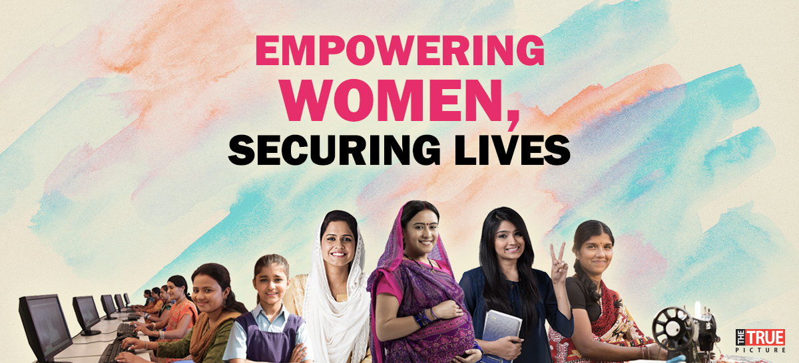

As India progresses economically, there are calls for the country to pay more attention to social and human development, including women empowerment. This paper defines women empowerment as efforts that include “advocating for women’s and girl’s human rights, combating discriminatory practices and challenging the roles and stereotypes that create inequalities and exclusion”.[1] Women empowerment is a critical aspect to achieving gender equality, where both men and women have equal power and opportunities for education, healthcare, economic participation and personal development.
While the Scandinavian countries such as Iceland, Sweden, Finland and Norway have made strides in narrowing the gender gap, significant economic and social disparities run deep in the Middle East, South Asia and Africa.[2] India’s journey towards women empowerment has its share of highs and lows. It has made gains by ratifying international conventions and formulating domestic policies intended to end gender inequality. The government has created the space for international agencies to work with state governments, local non-government organisations and private corporations on a plethora of projects to support women from different socio-economic backgrounds. Despite these efforts, India’s ranking on global surveys of gender equality has not improved significantly over the years.
Equal rights for men and women are enshrined under Articles 14 to 16 in the Indian constitution, which came into effect on 26 January 1950.
Brief History of Women Empowerment
Discrimination based on gender is strictly prohibited. Indian women received universal suffrage during India’s independence in 1947, long before several Western countries granted women the right to vote. India was the second country in modern history to have a female leader, Indira Gandhi, in 1966 after another South Asian state, Sri Lanka, elected Sirimavo Bandaranaike in 1960.
New Delhi has also taken a concerted effort to ratify key international conventions to end discrimination against women. It is a founding member of the International Labour Organisation (ILO) and has ratified 47 conventions and one protocol.[4] It signed the Convention on the Elimination of All Forms of Discrimination against Women (CEDAW)[5] in 1980 and ratified it in 1993 with some reservations. It has yet to ratify the Optional Protocol of the CEDAW and National Action Plan on Women, Peace and Security. Within the country, the Dowry Prohibition Act, 1961 and the Protection of Women from Domestic Violence Act, 2005 have been enacted to criminalise instances of dowry and domestic violence. The government also increased maternity leave from 12 weeks to 26 weeks under the Maternity Benefit Act in 2017 for the private sector.
The Women’s Reservation Bill gives 33 per cent reservation for women seats in all levels of Indian politics. This is an attempt to increase female political participation. The bill was first introduced on 12 September 1996 by the Deve Gowda government. Successive governments tried to push for the bill but it took 14 years to get it passed in the Rajya Sabha (Upper House of Parliament).[7] The bill has yet to be passed in the Lok Sabha (Lower House of Parliament) and in all state legislative assemblies. The introduction of the bill was a historic attempt to alter gender demographics in the Indian polity. Proponents of the quota system argue that it is a necessary step to increase women’s effective and meaningful participation in the political system. It could help to expedite a process that usually takes generations by incorporating women’s voices in governance. In contrast, sceptics think that the bill would only benefit elite women. While a 33 per cent female reservation is a bold step, the Trinamool Congress, one of the ardent supporters of the bill, went a step further by reserving 40 per cent seats for women to contest in the 2019 Lok Sabha elections.
Notable Gains
Women in India are emerging in all sectors, including politics, business, medicine, sports and agriculture. History was made when two female scientists from the Indian Space Research Organisation led the country’s second lunar mission Chandrayaan-2 from its inception to completion in 2019. Female leadership for a huge space mission challenged the meta narrative that rocket science is a profession reserved for men.[9] Another milestone was reached when the Supreme Court upended the government’s position on women serving as army commanders in 2020. Women were first inducted into the armed forces in 1992 and have served in a multitude of positions, including fighter pilots, doctors, nurses, engineers, signallers, etc. While the issue of women serving in combat roles continues to be a contentious one worldwide, these are instances where Indian women have overcome the glass ceiling in the armed forces.
India’s story on women empowerment is not complete without focusing on grassroots initiatives adopted by the government and civil society organisations. The federal and state governments have launched new schemes, policies and programmes to empower both urban and rural women. The Narendra Modi government has launched flagship schemes to promote gender equality, including Beti Bachao Beti Padhao (Save the Daughter, Educate the Daughter), Pradhan Mantri Ujjwala Yojana (a scheme to provide gas connections to women from below the poverty line households) and Mahila-E-Haat.[10] The Bachao Beti Padhao Yojana scheme was launched in January 2015 to address the issue of a gender skewed ratio and generate greater welfare for the girl child. The focus is centred mostly on Northern India, including Haryana, Uttar Pradesh, Delhi, Punjab and Uttarakhand where the gender ratio is wider. The Mahila-E-Haat project, an online marketing campaign, was launched in 2016. It uses technology to support female entrepreneurs, self-help groups and non-government organisations (NGOs). Each scheme has its own unique objective, ranging from welfare of the girl child and community engagement to supporting aspiring female entrepreneurs.
Challenges Remain
While India has taken some measures on human development, its global standing on gender equality remains low. India’s ranking in the Global Gender Gap Report, commissioned by the World Economic Forum, declined from 108th in 2018 to 112th in 2020.
India has managed to close two-thirds of its overall gender gap, especially in areas of political empowerment. It was ranked 18th on the Political Empowerment sub index, given that a woman headed the government for 20 years. However, female legislators constitute only 14.4 per cent of the Indian parliament and 23 per cent of the cabinet, making overall political representation relatively low. Unfortunately, its performance on economic empowerment for women has widened since 2006. The survey concluded that only 25 per cent of women relative to 82 per cent of men are working or seeking employment.
Moreover, their average income is around a fifth of what their male counterparts are earning. Even when Indian women secure jobs, there is a high propensity for them to be paid less than male employees. The ILO’s Global Wage Report 2018/19 found that the average pay gender gap is the highest in India at 34.5 per cent, among the 73 countries studied in detail.[12] Given that the female participation rate in informal jobs is greater than the formal sector, many women are at the receiving end of this pay disparity. Indian women make up merely 14 per cent of leadership roles. The economic empowerment of women will benefit everyone. The International Monetary Fund has estimated that equal female participation in the workforce could increase India’s gross domestic product by 27 per cent.
There are lessons that India could draw from the Japanese model to increase economic empowerment for women. Tokyo’s female labour force participation has visibly increased from approximately 66.5 per cent in 2000 to 76.3 per cent in 2016[14] primarily due to policy, demographic and economic factors under the Womenomics plan.[15] Its policies have changed considerably over time, including amending the existing labour laws, introducing new anti-discrimination provisions and enhancing child-care policies. The implementation and strengthening of new and existing legislation can incentivise women to join the workforce and continue working during marriage and early childrearing years. Although India has one of the most generous maternity leave policies, it is applicable to a small margin of working women. Its desire to replicate policies that have worked well elsewhere without taking the ground realities into account has resulted in few women actually benefiting from them. While studying these models closely could be useful, they need to be contexualised and fine-tuned to the Indian environment.
India’s prevailing issues on gender inequality should be seen in a wider context of South Asia. In rural areas, especially in the Hindi heartland, gender disparity is still significant. Women continue to be relegated to household tasks, with little or no say in economic decisions. Levels of literacy, nutrition and access to health care continue to be poor, and social welfare parameters are lower than neighbouring Bangladesh. The region’s gender gap is the second biggest after the Middle East and North Africa. Female parliamentary representation has remained low at 20 per cent or less in the region, except for Sri Lanka (33 per cent).[17] These factors could be attributed to societal norms, meta narratives and gender stereotypes that are deeply embedded in the South Asian culture. Researchers Jawad Syed and Edwina Pio have argued that efforts to achieve women empowerment in South Asia should be seen through the lens of religious, cultural and socio-economic particularities where new provisions in the legal sphere may not always be enforced and discrimination could continue within the societal and family structures. The patriarchal and patrilineal customs, with some exceptions, have impeded female mobility, access to basic healthcare and access to education and have led to forced marriages. Gender-based violence in the form of domestic, sexual and physical violence is particularly rampant in South Asia when the victims lack agency and power. In India alone, crimes against women are around 53.9 per cent. In the capital, New Delhi, 92 per cent of women have said that they have experienced physical or sexual violence in public areas.
Conclusion
India’s journey on women empowerment and gender equality started when it became a sovereign state in 1947. While visible gains have been made through legal reforms, human development and grassroots initiatives, New Delhi still has a long way to go in many areas of women empowerment. A more concerted effort is needed to close the urban-rural divide and ensure that women in rural areas enjoy the same access to education, employment, healthcare and decision-making as their urban counterparts. The hardest challenge will be to change attitudes, given that many barriers to women empowerment are attributed to patriarchal and patrilineal traditions that are deeply entrenched in many South Asian societies.


Georgia Reader Reply
Et rerum totam nisi. Molestiae vel quam dolorum vel voluptatem et et. Est ad aut sapiente quis molestiae est qui cum soluta. Vero aut rerum vel. Rerum quos laboriosam placeat ex qui. Sint qui facilis et.